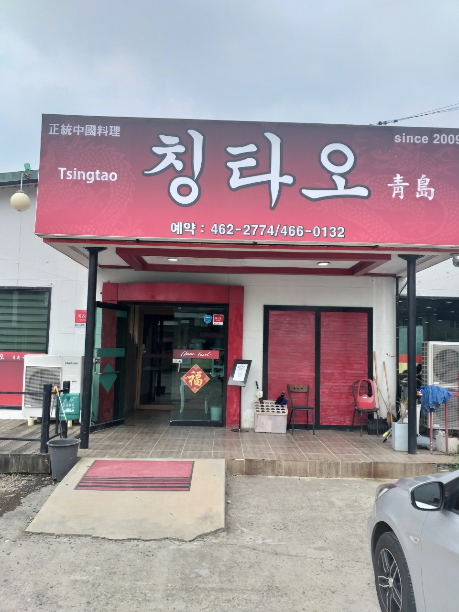

칭타오
063-1234-1234▼ 전라북도 군산시 미제길 41 1층 칭타오
◔ 영업시간 평일 10:40-20:10(목요일 정기 휴무)
🍽 짜장면, 짬뽕, 탕수육,볶음밥 등

사천성
063-461-3351▼ 전북 군산시 황룡2길 4-3 트인들
◔ 10:30-20:30(15:30-16:30 브레이크타임)(매주 일요일 휴무)
🍽 짜장면, 짬뽕, 탕수육

동네중국집
0507-1327-9479▼ 전북 군산시 대학로 531 1층
◔ 일 11:00-15:00 13:30 라스트오더 월-토11:00-23:00(15:00-17:00브레이크 타임)
🍽 짜장면, 군산짬뽕, 볶음밥
중화요리 황룡
063-468-5651▼ 전북 군산시 미제길 35-1
◔ 일 11:00-15:00 13:30 라스트오더 월-토11:00-23:00(15:00-17:00브레이크 타임)
🍽 짜장면, 짬뽕, 탕수육
야미마라탕
063-462-0130▼ 전북 군산시 미제1길 11 1층
◔ 11:00-21:00(매주 일요일 휴무)
🍽 마라탕, 아마샹궈, 꿔바로우
취향각
063-471-6800▼ 전북 군산시 미룡로 15
◔ 11:00-21:00(매주 일요일 휴무)
🍽 짜장면, 짬뽕, 탕수육
탕화쿵푸
0507-1378-6613▼ 전북 군산시 대학로 529 103호
◔ 11:00-21:30(매주 토요일 휴무)
🍽 마라탕, 아마샹궈, 꿔바로우
우낀짬뽕
063-463-5551▼ 전북 군산시 황룡1길 17 사랑원룸
◔ 월-금 10:30-20:00 , 토 10:30-15:00(매주 일요일 휴무)
🍽 우낀짬뽕, 눈물짬뽕, 탕수육

디지스
0507-1356-0635▼ 전북 군산시 미제1길 7
◔ 11:00-21:00(14:00-16:00 브레이크 타임)(금요일 휴무)
🍽 라구 토마토 파스타, 베이컨 크림 파스타

라라코스트
0507-1489-3230▼전북 군산시 황룡로 10 2층
◔ 11:00-21:30(15:00-17:00 브레이크 타임)
🍽 파스타, 스테이크, 필라프

파스토
063-464-6202▼ 전북 군산시 황룡안길 50
◔ 11:00-21:00(매주 일요일 휴무)
🍽 매운낙지 도리아, 치킨 도리아, 까르보나라
일식 메뉴 1
초밥, 덮밥, 라면
일식 메뉴 2
돈까스, 소바, 우동
한식 메뉴 1
비빔밥, 불고기, 김치찌개
한식 메뉴 2
갈비탕, 떡볶이, 삼겹살
패스트 푸드 메뉴 1
햄버거, 피자, 감자튀김
패스트 푸드 메뉴 2
치즈버거, 핫도그, 치킨 너겟